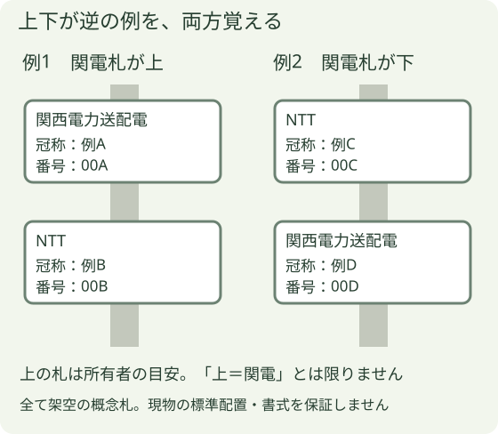

電柱番号札の見分け方
この章でつかむこと
同じ電柱の二つの札を取り違えず、会社表示と冠称名・番号の全文を対象資料と照合できるようにします。上下が逆の二例を見比べてください。
同じ電柱に関西電力送配電とNTTの札がある場合、会社表示を先に読みます。冠称名と番号を一組にして、指示書の対象と照合します。

二つの例で確かめる
左の例と右の例で、関西送配電の札をそれぞれ会社表示から探します。次に上下を見ます。位置が変わっても会社表示と全文を読む順序は同じです。英字や上の位置だけで決めないことが、この比較の要点です。
1 何を読むか
- 会社表示：会社名やマークを読み、どちらの札かを記録。
- 冠称名＋番号：漢字・かな・英字・数字を含め、全文を省略せず記録。
- 対象との照合：指示書・地図に書かれた番号と合わせます。読めない文字は推測で補いません。
2 上下と文字は、見分ける目安
共用時は「上が所有者」の目安がありますが、「上が関電」ではありません。原典にも関西送配電の札が上の例・下の例があります。
| 札 | 含まれる表記の例 |
|---|---|
| 関西送配電 | 東・西・南・北、G・E・W・S・N等 |
| NTT | 左・右、L・R等 |
文字の例は必ず当てはまる識別規則ではありません。英字から方角や枝線の意味を独自に推測しません。
3 判断できないとき
二つの札を両方記録し、会社表示・冠称名・番号と、どちらが上かを残して設備所管へ確認します。番号札だけで電線の種別・停電状態・作業可否は決めません。
出典と機種・適用範囲
- 関西電力送配電：高圧各種申込WEB「別冊 入力事例集」（2025年11月） — 冊子21頁、PDF23枚目（index22）の番号札解説。原文の目安と所管確認を独自に整理。
2026年10月25日確認。メーカー図・写真は転載せず、会社写真と独自の模式図を使っています。